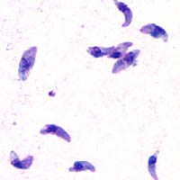

Página 8 · Parte D · Avidez antes de 16 semanas e o alvo do tratamento
Parte D · Toxoplasmose · Avidez e alvo do tratamento
⚕
Duas vinhetas guiam o raciocínio: (1) G−M+ com 10 semanas; (2) G+M+ com menos de 16 semanas. O desfecho — parar, manter espiramicina ou mudar para esquema fetal — se constrói abaixo.
ObstetríciaAvidez só <16 semEspiramicina × sulfa + pirimetamina + folínicoPCR no LAItens 095–114
Tópico 1
Avidez só faz sentido antes de 16 semanas
IgG+ IgM+: só pedir teste de avidez se a gestante tem < 16 semanas. Alta avidez:> 60% → infecção com mais de 4 meses (kit-dependente — laudo). Se alta avidez e a gestação tem menos de 4 meses → infecção antes da gravidez → pode parar o tratamento. Se baixa avidez → manter tratamento (sem discussão). Com ≥ 16–18+ semanas (ex.: 18–20), não pedir avidez: mesmo "alta" só diz ">4 meses", sem precisão se foi pré ou intra-gestacional. ≥ 16 semanas + G+M+:seguir com tratamento (sem avidez).
Tópico 2
Tratamento materno versus fetal
Tratamento materno:espiramicina. Tratamento fetal:sulfadiazina + pirimetamina + ácido folínico. Espiramicina trata a mãe mas não atravessa bem a barreira placentária — não trata o feto. Esquema fetal não se usa no primeiro trimestre. Infecção / suspeita com < 16 semanas: iniciar espiramicina logo (mesmo G−M+ aguardando IgG em 3 sem, ou G+M+ aguardando avidez). Após 16 semanas, se infecção se confirma/mantém: mudar para tratamento fetal.
Tópico 3
≥16 semanas e o papel do PCR no líquido amniótico
Confirmação fetal desejável: US + PCR de Toxoplasma no líquido amniótico (amniocentese). US normal não tranquiliza sozinho; US alterado ajuda, mas o ideal confirmatório é o PCR no LA. Na realidade do sistema, amniocentese/PCR não estará disponível para todas — o MS assume conduzir tratamento mesmo assim. Só parar tratamento fetal se PCR do LA negativo → voltar à espiramicina (reduzir transmissão). Infecção descoberta com > 16 semanas:direto sulfa + pirimetamina + folínico + investigar feto (US + PCR).
Tópico 4
Dois casos-guia
G−M+ com 10 semanas → espiramicina + IgG em 3 sem; se soroconverter, manter espiramicina até 16 e então esquema fetal se indicado.
G+M+ com <16 sem → espiramicina enquanto faz avidez; se avidez não afasta, manter até 16 e tratar feto.
Detalhes de pediatria/congênita completa ficam na esteira de infecção congênita; aqui o foco é conduta no pré-natal.
Pegadinha de prova
pedir avidez ≥16 sem para "decidir" — a avidez não discrimina pré vs intra nessa janela.
Por que importa na prática
trocar a espiramicina pelo esquema fetal antes de 16 sem é o erro: a sulfa + pirimetamina não se usa no 1ºT.
Resumo operacional
Avidez só <16 sem: alta + <4 m = infecção antes (parar); baixa = manter. Materno = espiramicina (não atravessa placenta). Fetal = sulfa+pirimetamina+folínico (após 16 sem). PCR no LA decide parar fetal.
Conexão
encerrada a sorologia da toxo, o próximo nó é o GBS — swab no fim, antibiótico no parto.

Feto 12 semanas · TN visível
P8 avidez / tratamento
Imagem de US obstétrico, licença CC. Arquivo local: media/B15-Fetal_oesophagus_12w_TN_Moroder.jpg.
Materno × fetalEspiramicina trata a mãe, passagem placentária fraca; sulfa + pirimetamina + folínico trata o feto e não se usa no 1ºT.
Quiz
G+M+ com 20 semanas. Conduta sobre avidez:
Virada: ≥16 sem a avidez não discrimina pré vs intra.
(A) lê "alta avidez" como prova de pré-gestação — não é. (C/D) perdem a janela de tratamento fetal.
Qual afirmação sobre espiramicina é correta?
Virada: espiramicina é tratamento materno.
(A/C/D) confundem esquemas.
PCR de Toxoplasma no LA negativo sob tratamento fetal:
Virada: PCR negativo permite reduzir para espiramicina.